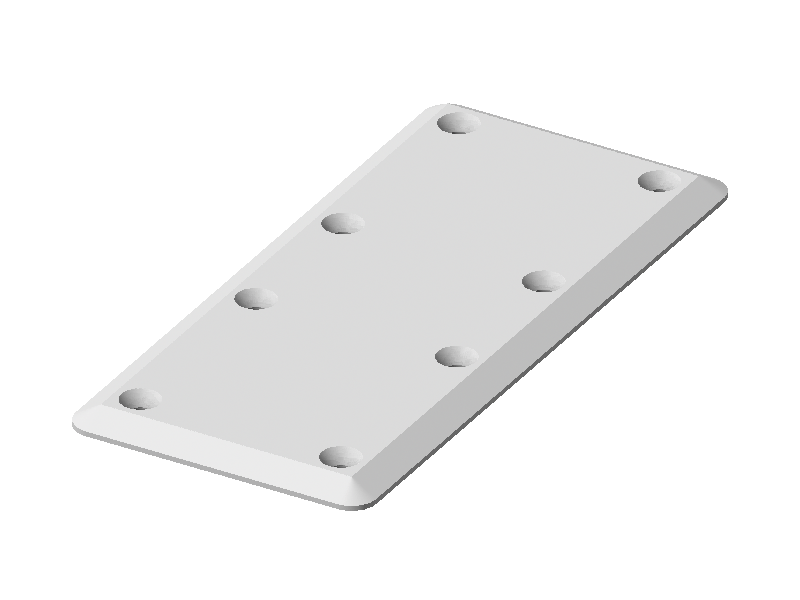

ivar-joiner
Drafted with AI, not yet reviewed
IKEA IVAR joiner: a plate that screws across the tops of two side-by-side legs.
The plate’s top edge slopes like OpenSCAD’s minkowski() with a cone; here the slope is a plane equation, intersected with the rounded slab.


Files
Source
// SPDX-License-Identifier: 0BSD // // IKEA IVAR joiner: a plate that screws across the tops of two side-by-side // legs, ported from OpenSCAD. // // The plate's top edge slopes like OpenSCAD's minkowski() with a cone; here // the slope is a plane equation, intersected with the rounded slab. // --- Parameters --- const LEG = 70.0; // width of one leg's top, unverified const MARGIN = 5.0; // inset of the plate from the legs' outline const ROUNDING = 5.0; // corner radius of the plate's footprint const THICKNESS = 4.0; const SLOPE_START = 1.0; // height where the top edge starts to slope in // Wood screws: a 67-degree conical head, 2.8 mm deep const SCREW_R = 1.9; const SCREW_LENGTH = 19.2; const HEAD_R = 3.75; const HEAD_H = 2.8; // --- Parts --- // A screw's hole, its head flush with z = 0 and room above it. fn wood_screw_hole() { union([ cylinder(global::SCREW_R, [-global::SCREW_LENGTH, 0]), cone([global::SCREW_R, global::HEAD_R], [-global::HEAD_H, 0]), cylinder(global::HEAD_R, 2).move([0, 0, 1]), ]) } // The footprint covers both legs, less the margin; the top face is // ROUNDING smaller all round, and the edge slopes from the footprint at // SLOPE_START up to the top face. let footprint = [LEG - 2 * MARGIN, 2 * LEG - 2 * MARGIN]; let top = [footprint[0] - 2 * ROUNDING, footprint[1] - 2 * ROUNDING]; let rise = THICKNESS - SLOPE_START; let slab = rect(footprint, #{round: ROUNDING}).extrude([0, THICKNESS]); // rect(top) grows by ROUNDING as z falls by `rise`: the plane // rise * d + ROUNDING * z = ROUNDING * THICKNESS, normalised to a distance. let slope = (rise * rect(top) + ROUNDING * (z - THICKNESS)) / hypot(rise, ROUNDING); let plate = intersection(slab, slope); // Four screws per leg, in a square 40 mm across centred on the leg; one // leg's group mirrored onto the other. let spread = LEG - 6 * MARGIN; let group = wood_screw_hole().grid_array([spread, spread], [2, 2], #{center: true}); let holes = group.move([0, LEG / 2, THICKNESS]).symmetric_y(); draw(plate.difference(holes));